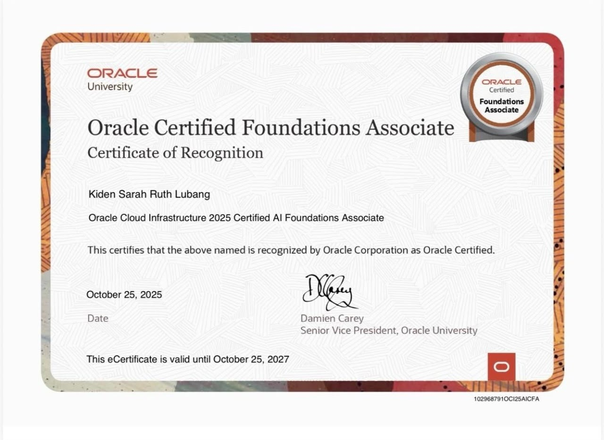
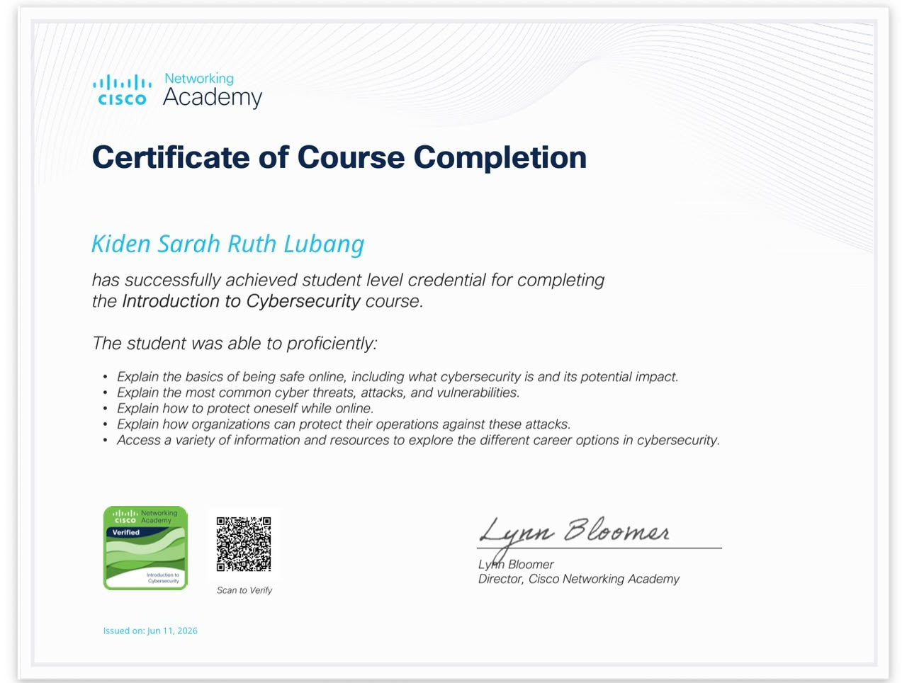

Web Vulnerability Scanning
Utilising OWASP ZAP to execute automated active and passive security scans against targeted web applications to identify vulnerabilities and document remediation steps.
- OWASP ZAP
- Active scan
- Passive scan
- Remediation
I'm Kiden Sarah Ruth Lubang, an aspiring cybersecurity professional based in Kampala, working toward a career in Security Operations Centre (SOC) analysis.

SIEM monitoring, incident response, vulnerability management, cloud and network security.
View skills 5+ certificatesCredentials from IBM, Cisco Networking Academy and Oracle Academy.
View certificates The short versionWhy I'm drawn to defensive security and networking.
Read moreMonitoring security alerts using SIEM tools, analysing logs, responding to potential incidents and maintaining organisational defensive posture.
Detecting, containing and eradicating security breaches following incident response lifecycles and performing deep-dive forensic analysis on system artifacts to reconstruct malicious activities.
Identifying system vulnerabilities, leveraging OWASP ZAP to conduct web application scans and executing targeted remediation strategies to mitigate organisational risks.
Configuring secure network architectures, implementing firewalls and intrusion detection systems as well as hardening operating systems to safeguard critical enterprise infrastructure.
Evaluating cloud security postures, implementing Identity and Access Management (IAM) and securing multi-cloud environments against emerging threats using industry-standard frameworks.
Evaluating data security postures, applying data encryption and ensuring compliance with industry data privacy frameworks and enterprise governance policies.
Understanding foundational AI and Machine Learning concepts, exploring Large Language Models and identifying core infrastructure services within the Oracle Cloud Infrastructure (OCI) ecosystem.
Acquiring fundamental knowledge in security principles, data privacy and threat landscapes while utilising enterprise-grade security tools and methodologies to identify vulnerabilities and protect digital assets.
Designing, configuring and troubleshooting basic IPv4 and IPv6 networks, implementing essential security configurations on routers and switches and mitigating security threats using Cisco network protocols.
Utilising scripting basics in Python and JavaScript to automate routine tasks and parse security data files.
Utilising OWASP ZAP to execute automated active and passive security scans against targeted web applications to identify vulnerabilities and document remediation steps.
My SOC Analyst Lab repository on GitHub is where new exercises and write-ups are added as I complete them.
Browse the repositoryVerified credentials in defensive security, networking and cloud foundations. Select any certificate to view it larger.

Issued by Oracle Academy

Issued by Cisco Networking Academy

Five certificates issued by IBM.
 Governance, Risk, Compliance and Data Privacy
Governance, Risk, Compliance and Data Privacy
 Vulnerability Management
Vulnerability Management
 System and Network Security
System and Network Security
 Cloud Security
Cloud Security
 Incident Response and System Forensics
Incident Response and System Forensics

Issued by Cisco Networking Academy
I thrive in dynamic, fast-paced environments where every day brings unique challenges. I am drawn to defensive security because of the meaningful impact of protecting organisational assets and neutralising threats.
Focused on active monitoring, risk mitigation and threat detection, I leverage a strong foundational understanding of computer infrastructure to keep systems and environments secure. My passion lies in protective defence rather than pure software programming.
Feel free to reach out if you have any questions or security opportunities.